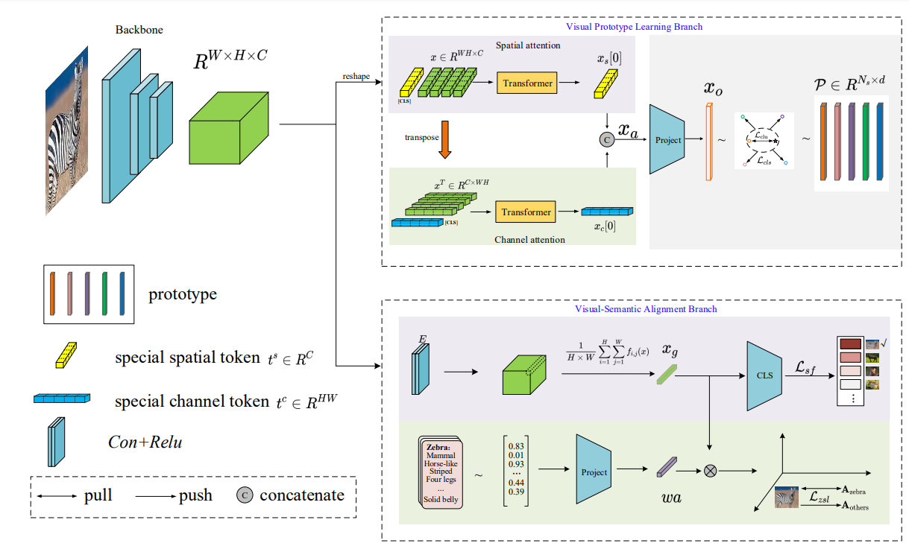
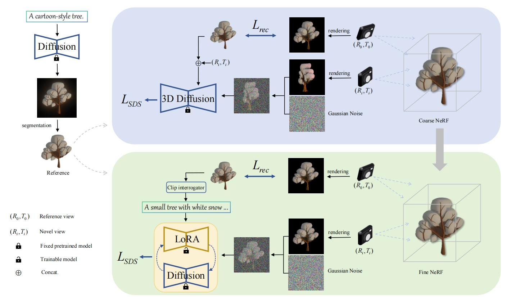

Personal introduction: I am a third-year graduate student from Beijing University of Technology, enrolled in 2021.
Currently, I am studying at the Multimedia and Artificial Intelligence Software Laboratory in Beijing, under the supervision of Professor Hu Yongli.
My research focuses on multimodal learning and computer graphics, particularly in the areas of multimodal zero-shot learning and multimodal 3D asset generation.
You can reach me at flcggm@gmail.com or 2512448518@qq.com.
Domain-aware Prototype Network for Generalized Zero-Shot Learning
Yongli Hu,Lincong Feng,Hujie Jiang,Mengting Liu,Baocai Yin
TCSVT 2023|Paper|Project Page|Code
MetaDreamer: High-Fidelity and Efficient 3D Multi-modal Reconstruction and Generation
Lincong Feng,Muyu Wang,Maoyu Wang,Xiaoli Liu
arxiv 2023|Paper|Project Page|Code
